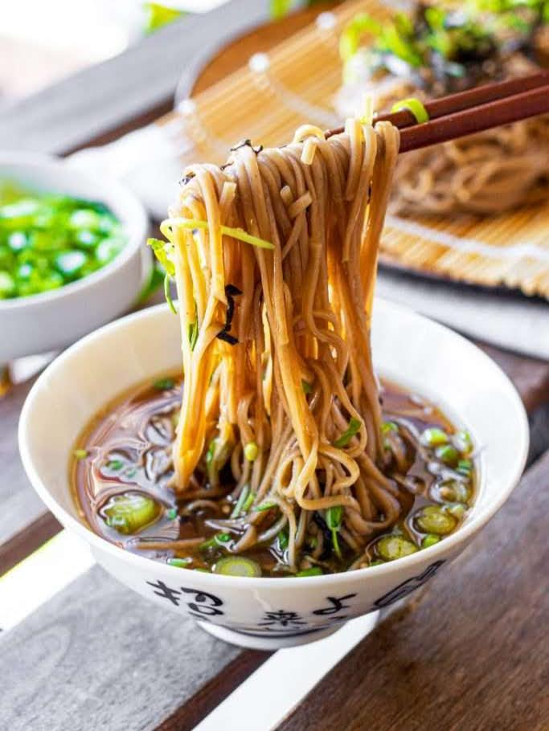

cold soba noodles

description
If you're looking for a meal that's a little sweet, chilled, and easy to make, look no further!
Zaru soba is a healthy Japanese cold soba noodle dish that consists of soba noodles paired with a simple four-ingredient Mentsuyu dipping sauce. Super delicious and easy recipe to enjoy in the summer or, like me, in college.
ingredients
- 7 oz (two bundles) soba noodles
- 1 cup dashi (2/3 tsp instant dashi mixed with 1 cup water) or low-sodium chicken stock
- 1/4 cup soy sauce
- 1/4 cup mirin
- 1 tbsp sugar
- sesame seeds
- green onions
- egg yolk (to mix with the sauce)
mentsuyu dipping sauce
optional
steps
- Add dashi, soy sauce, mirin, and sugar into a saucepan and bring to a boil. Set aside to cool.
- Cook noodles according to the package. Drain and rinse in cold water. Garnish if you want, otherwise...
- Serve the sauce in a small bowl, then dip your noodles in the sauce and eat up!